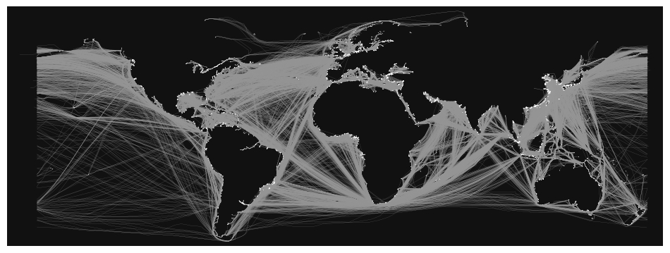

Sea Routes#
This notebook cleans and processes maritime routes from Mariquant (2019) made available in the following S3 links:
import pandas as pd
import geopandas as gpd
from os.path import join, expanduser
from shapely.geometry import Point
from shapely.wkt import loads
from shapely.geometry import LineString, MultiLineString
from tqdm import tqdm
pd.set_option("display.max_columns", None)
import sys
gn_path = join(expanduser("~"), "Repos", "GOSTnets")
sys.path.append(gn_path)
import GOSTnets as gn
import osmnx as ox
import pickle
import numpy as np
import matplotlib.pyplot as plt
%load_ext autoreload
%autoreload 2
Load Datasets#
routes_dir = join(expanduser("~"), "tmp", "sea_routes")
ports = pd.read_csv(join(routes_dir, "ports.csv"), index_col=0)
distances = pd.read_csv(join(routes_dir, "distances.csv"), index_col=0)
routes = pd.read_csv(join(routes_dir, "routes.csv"), index_col=0)
routes.loc[:, "geometry"] = routes.apply(lambda x: Point(x["lon"], x["lat"]), axis=1)
routes = gpd.GeoDataFrame(routes, geometry="geometry", crs="EPSG:4326")
routes.head(3)
| trip_count | prev_port | next_port | lat | lon | frequency | geometry | |
|---|---|---|---|---|---|---|---|
| 7641 | 1984063 | 4410 | 3658 | 45.764835 | -87.053288 | 1.0 | POINT (-87.05329 45.76483) |
| 7642 | 1984063 | 4410 | 3658 | 45.608533 | -87.038217 | 1.0 | POINT (-87.03822 45.60853) |
| 7643 | 1984063 | 4410 | 3658 | 45.560133 | -87.034233 | 1.0 | POINT (-87.03423 45.56013) |
ports.loc[:, "geometry"] = ports.apply(lambda x: Point(eval(x.coords)[0]), axis=1)
ports = gpd.GeoDataFrame(ports, geometry="geometry", crs="EPSG:4326")
ports.head(2)
| PORT_NAME | INDEX_NO | coords | geometry | |
|---|---|---|---|---|
| 49159 | Terminal Pesquero Cta. Quiane | NaN | ((-70.31722387298942, -18.513597026467323),) | POINT (-70.31722 -18.51360) |
| 49164 | Oil Berth | NaN | ((-61.86886473007713, 17.150384410999997),) | POINT (-61.86886 17.15038) |
Merge Routes with Geometry#
Clean Geometries#
Split geometry if it passes the international dateline (180 longitude)
pdc = "EPSG:3832"
wgs = "EPSG:4326"
azimuthal = "ESRI:54032"
wgs = "EPSG:4326"
# check if signs of two numbers are different
def sign_diff(a, b):
return a * b < 0
# split coords by dateline crossing
def split_coords(coords):
# coords = list(coords)
xs = [coord.x for coord in coords]
xs_ = np.sign(xs)
groups = []
g = 0
for i, x in enumerate(xs_):
groups.append(g)
if i + 1 == len(xs_):
break
else:
if x != xs_[i + 1]:
g += 1
components = []
for group in np.unique(groups):
g_mask = [g == group for g in groups]
comp = coords[g_mask]
if len(comp) > 1:
components.append(comp)
return components
def get_line(row):
route = routes.loc[routes["trip_count"] == row.trip_count].copy()
coords = route.geometry.values
xs = [coord.x for coord in coords]
# check if route crosses dateline
n_components = 1
if sign_diff(np.min(xs), np.max(xs)) and (
(np.abs(np.min(xs)) + np.abs(np.max(xs))) > 180
):
components = split_coords(coords)
if len(components) == 1:
geom = LineString(components[0])
elif len(components) > 1:
n_components = len(components)
geom = MultiLineString(components)
else:
geom = None
n_components = 0
else:
geom = LineString(coords)
return (geom, n_components)
distances = distances.loc[(distances.prev_port != distances.next_port)].copy()
len(distances)
54464
for idx, row in tqdm(distances.iterrows()):
geom, n_components = get_line(row)
distances.loc[idx, "geometry"] = geom
distances.loc[idx, "n_components"] = n_components
54464it [14:08, 64.16it/s]
distances.to_csv(join(routes_dir, "distances_processed.csv"), index=False)
distances = pd.read_csv(join(routes_dir, "distances_processed.csv"))
distances_filt = distances.loc[~(distances.geometry.isna())].copy()
distances_filt.loc[:, "geometry"] = distances_filt.apply(
lambda x: loads(x.geometry), axis=1
)
ports.reset_index(inplace=True)
distances_filt.n_components.value_counts()
n_components
1.0 52753
2.0 1705
4.0 2
3.0 2
Name: count, dtype: int64
distances = distances_filt.copy()
Clean Rotues#
Remove routes with too many segments
distances = distances.loc[distances.n_components < 3].copy()
distances = gpd.GeoDataFrame(distances, geometry="geometry", crs=wgs)
Remove long routes that intersect land (likely errors)
land = gpd.read_file(join(expanduser("~"), "tmp", "ne", "ne_50m_land.shp"))
ERROR 1: PROJ: proj_create_from_database: Open of /home/jupyter-wb514197/.conda/envs/move/share/proj failed
land_geom = land.unary_union
def get_intersect_pct(geom):
if geom.intersects(land_geom):
length = geom.length
length_land = geom.intersection(land_geom).length
return length_land / length
else:
return 0
distances.loc[:, "land_intersect"] = distances.apply(
lambda x: get_intersect_pct(x.geometry), axis=1
)
distances.land_intersect.describe()
count 54458.000000
mean 0.061974
std 0.197872
min 0.000000
25% 0.000000
50% 0.000110
75% 0.008023
max 1.000000
Name: land_intersect, dtype: float64
len(distances.loc[distances.land_intersect > 0.5])
2597
intersect_thresh = 0.1
length_thresh = distances.length.median() # 10 #
distances2 = distances.loc[
~(
(distances.land_intersect > intersect_thresh)
& (distances.length > length_thresh)
)
].copy()
/tmp/ipykernel_394997/3263271145.py:3: UserWarning: Geometry is in a geographic CRS. Results from 'length' are likely incorrect. Use 'GeoSeries.to_crs()' to re-project geometries to a projected CRS before this operation.
length_thresh = distances.length.median() # 10 #
/tmp/ipykernel_394997/3263271145.py:4: UserWarning: Geometry is in a geographic CRS. Results from 'length' are likely incorrect. Use 'GeoSeries.to_crs()' to re-project geometries to a projected CRS before this operation.
distances2 = distances.loc[~((distances.land_intersect>intersect_thresh) & (distances.length>length_thresh))].copy()
len(distances2)
53293
Plot Routes#
fig, ax = plt.subplots(figsize=(12, 14))
distances2.plot(ax=ax, linewidth=0.1)
plt.axis("off")
(-208.73408508695817, 200.2372267536647, -62.9315025035, 83.9357858335)
Convert to Graph Network#
G = gn.edges_and_nodes_gdf_to_graph(
nodes_df=ports,
edges_df=distances2,
node_tag="index",
u_tag="prev_port",
v_tag="next_port",
geometry_tag="geometry",
largest_G=False,
discard_node_col=[],
checks=False,
add_missing_reflected_edges=False,
oneway_tag=None,
)
Save graph
gn.save(G, "G_sea_routes", routes_dir, pickle=False, nodes=True, edges=True)
with open(join(routes_dir, "G_sea_routes.gpickle"), "wb") as f:
pickle.dump(G, f, pickle.HIGHEST_PROTOCOL)
G.graph["crs"] = wgs # wgs
fig, ax = ox.plot_graph(G, figsize=(12, 14), node_size=0.5, edge_linewidth=0.1)
